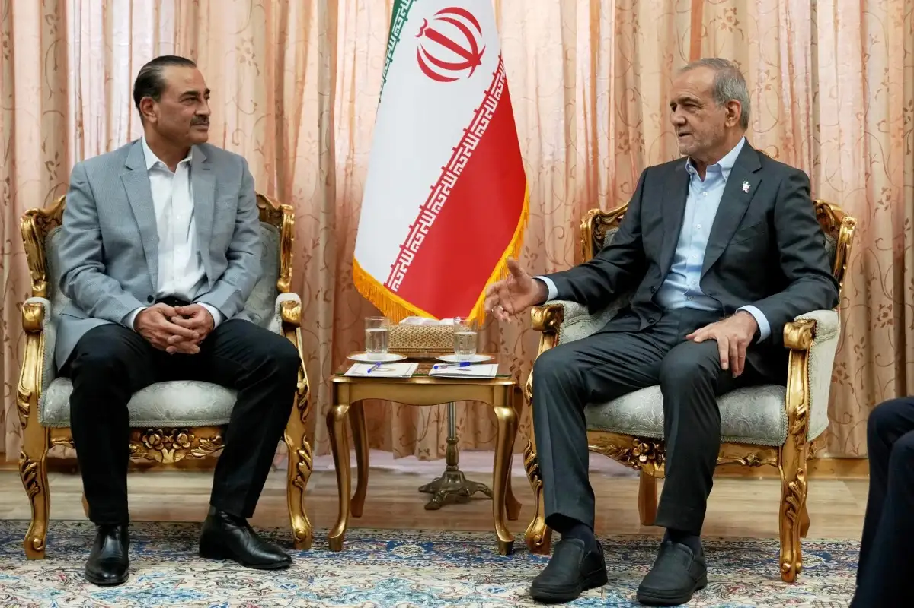

Breaking News
 May 25
May 25
by Olivia Bennett
The United States and Iran moved closer to a potential diplomatic agreement focused on reopening the Strait of Hormuz, easing sanctions, and reducing nuclear tensions.
The United States and Iran moved closer to a major diplomatic agreement aimed at ending months of conflict and reopening the Strait of Hormuz, one of the world’s most important oil shipping routes. According to the Associated Press, regional officials said negotiations had advanced significantly and both sides were discussing a framework involving a ceasefire, sanctions relief, and limits on Iran’s nuclear activities. President Donald Trump said negotiators should “not rush” into finalizing the agreement, even as he claimed substantial progress had already been made. The proposed framework reportedly includes a 60-day negotiation period during which Iran would either dilute or transfer its stockpile of highly enriched uranium while broader talks continue. The Washington Post reported that negotiations also focused heavily on restoring shipping through the Strait of Hormuz after months of military clashes, naval blockades, and attacks on commercial vessels disrupted global energy markets. The reopening of the waterway became one of the central priorities for both Washington and Tehran because roughly one-fifth of the world’s oil passes through the strait. The AP reported that the emerging agreement could also involve the United States lifting parts of its naval blockade on Iranian ports and granting limited sanctions waivers allowing Iran to export oil more freely. Iran would in return permit unrestricted commercial passage through Hormuz and potentially cooperate on reducing tensions across the wider Middle East. Regional mediators including Pakistan, Saudi Arabia, Egypt, and the United Arab Emirates reportedly played major roles in advancing the negotiations. The Guardian previously reported that Pakistani Prime Minister Shehbaz Sharif and military officials helped broker indirect talks between Washington and Tehran. The ceasefire discussions follow months of war involving U.S. and Israeli strikes in Iran, Iranian retaliation and repeated clashes across the Persian Gulf. The conflict caused major disruptions to the oil markets, shipping and global investor confidence through 2026. Despite signs of progress, officials on both sides have acknowledged that negotiations remain fragile and several major disagreements still threaten the possibility of a final agreement.
One of the largest unresolved issues in the negotiations involves Iran’s stockpile of highly enriched uranium. Reuters reported that a senior Iranian official denied claims that Tehran had agreed to hand over its uranium reserves as part of the proposed deal. The disagreement became central to the talks because the United States and Israel continue demanding stronger guarantees limiting Iran’s nuclear capabilities. According to the AP, the proposed agreement would require Iran to either dilute or transfer portions of its uranium stockpile during the 60-day negotiation period. Russia reportedly emerged as one possible destination for the material. Iranian officials publicly rejected suggestions that Tehran would surrender its strategic leverage completely. Reuters reported that Iran insisted its nuclear program remains a sovereign national issue and denied reports claiming a finalized agreement already exists regarding uranium transfers. At the same time, some U.S. officials argued that Iran’s leadership had agreed “in principle” to future limits on enriched uranium as part of a broader peace settlement. The AP reported that sanctions relief would only occur after compliance is independently verified. The Washington Post noted that hardliners inside both Iran and the United States remain deeply skeptical of the negotiations. Some Iranian political factions oppose making concessions after months of war, while several American Republicans criticized Trump’s emerging framework as too favorable toward Tehran. Israel also reportedly remains cautious about any agreement that does not permanently dismantle Iran’s nuclear capabilities. Israeli officials emphasized that any final settlement must eliminate what they describe as the long-term nuclear threat posed by Tehran. The uranium dispute therefore became one of the most sensitive parts of the broader negotiations, reflecting deeper disagreements over sanctions, sovereignty, regional power, and long-term security guarantees across the Middle East.
The future of the Strait of Hormuz remained one of the most important drivers behind the ceasefire negotiations. Iran previously restricted shipping through the waterway after the United States and Israel launched military strikes earlier in the year, triggering a global energy crisis and sharp increases in oil prices. The AP reported that the proposed agreement would reopen the strait fully to commercial shipping and remove naval mines and military barriers deployed during the conflict. The United States would simultaneously suspend elements of its blockade against Iranian ports. The Strait of Hormuz is a strategic corridor for about 20% of the world’s oil exports and regional stability is crucial to global energy markets. Reuters reported that oil prices fell sharply as reports of diplomatic progress emerged, with Brent crude dropping toward $97 per barrel and U.S. crude also declining significantly. Markets reacted positively because investors increasingly believed a settlement could reduce inflation pressures and restore stability to global shipping routes. However, analysts warned that any renewed military escalation could quickly reverse those gains. Despite improving diplomatic signals, shipping through the Gulf remains below normal levels, as insurance costs, military risks and uncertainty surrounding the negotiations continue to impact commercial traffic in the region, the Washington Post reported. Military tensions also remain high. Earlier in May, U.S. forces launched strikes on Iranian targets after Tehran attacked American warships operating near the strait. Iran responded with missile and drone attacks while continuing to challenge the U.S.-led naval presence in the Gulf. Trump insisted that reopening the Strait of Hormuz and stabilizing oil markets remain critical priorities for his administration. He said the emerging agreement could end the war, relieve economic pressure worldwide and restore long-term stability to the region. The talks were therefore not only a military and diplomatic problem, but also one of the most important economic developments that would affect global markets, oil prices and international trade in 2026.

Olivia Bennett is a U.S. political correspondent reporting on federal policy, election developments, and national governance issues.